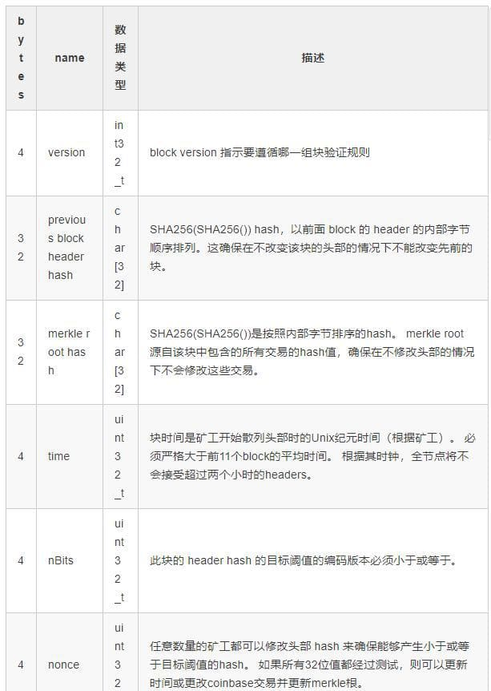
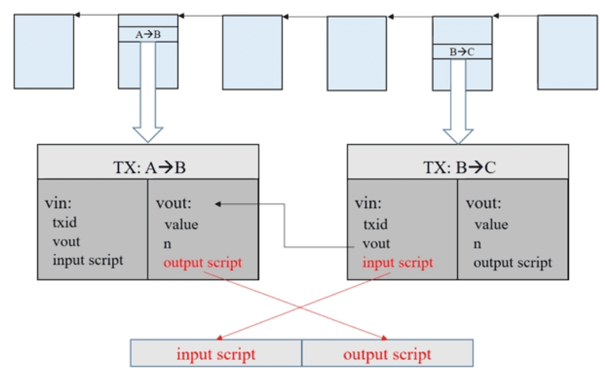
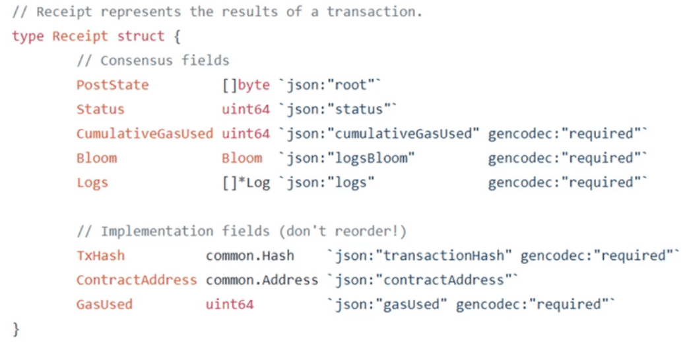

名词及概念
- Coinbase transcation
- 1 BTC(比特币) = 100 cBTC(比特分) = 1000 mBTC(毫比特) = 1000000 uBTC(微比特) = 1E8(100000000)聪
- Genesis block:第一个区块(有特殊hash值)
- mining,miner,nonce
- selfish mining:恶意节点挖到区块后不发布,而是等到积累一定数量的区块后再一次性发布,用来防止six confirmation(需要恶意节点数超过50%)
- 比特币 translation-based ledger
- 以太坊 account-based ledger
- 比特币中缺省six confirmation:防止恶意节点攻击(区块链增加一个区块后,后续要等待五个区块的添加)
- 比特币：double spending attack(付款人)；以太坊：replay attack(收款人)
- bounty：赏金
- 区块链的安全性：所有的全节点要独立验证发布的区块
- zhenxiao.com/
- 最初每个区块可以产生50枚比特币奖励，在每21万个区块后(每21万个区块约4年时间)，每个区块的奖励减半（现在每个区块可以奖励12.5枚比特币）,所以比特币共有2100万个，到2140年，比特币将无法细分。
- 安全性保证:密码学以及共识机制
- 密码朋克（cypherpunk）：结合了电脑朋克的思想，在电脑化空间下的个体精神，使用强加密（密文）保护个人隐私。
- 比特币水龙头网站：给访问网站的每个人分发小额比特币奖励，达到引流作用。
- 每个钱包都是一个节点，其中拥有完整区块链账本的节点叫做全节点，只拥有根hash值和一些信息的叫轻节点。
- 算力（也称哈希率）是比特币网络处理能力的度量单位。即为计算机（CPU）计算哈希函数输出的速度。一个挖矿机每秒钟能做多少次hash碰撞，就是其“算力”的代表，单位写成hash/s。
- 零知识证明:证明者能够在不向验证者提供信息本身内容的情况下,使验证者相信某个论断是真实可信的一种技术.可以在不泄漏信息本身内容的情况下,证明拥有某个秘密.
- 重放攻击:在比特币硬分叉后，新链与原链拥有相同的交易数据、地址、私钥、交易方式。在硬分叉之前的一种币，会因为分叉而变成两种,即可得到等额的新币.同时,在一种币上进行的交易,也可以广播到另一种币上.
比特币
概述
交易流程：
- 有一个新的交易，要向全网公布广播。
- 每一个节点，都要将收集到的交易信息，放入一个区块中。
- 每一个节点都要试着在自己的区块中，找到一个足够难的工作量证明。
- 当一个节点找到了自己的工作量证明，都要对全网进行公布广播。
- 当且仅当这个区块中的所有交易是有效且之前从未有过，其他的节点才承认这个交易过程的有效性。
- 其他节点表示承认这个区块，表示认可的方法就是，根据这个区块的编码，往后延长这个链接。
UTXO可以看做是一个比特币驱动的状态机。
密码学原理
数据结构
Hash Pointer
Merkle Tree
- block header：包含某个区块所包含的所有交易组成的Merkle Tree组成的根Hash值，但是没有交易的具体内容。
- block body：包含交易的列表和内容
- 全节点：包含header和body
- 轻节点：只包含header

Merkle Proof/Proof of membership/Proof of inclusion：
- 证明数据(交易)是否归属于此merkle树。
- 在不需要存储整个数据的情况下，就可以简明地证明数据是否属于资料组的一部分。
- 验证某些数据组是包含在更大的数据组中，而无须显示整个数据组或其子资料组。
Proof of non-membership
- sorted merkle tree
共识协议
账本的内容要取得分布式的共识.
普通投票法:
- 少数服从多数:恶意节点可以生成许多帐号投票,直到超过阈值(没有决定是否有投票权,简单的直接投票不行).
最长链投票法:
- 分叉攻击:选择最长链
- 两个节点同时记账成功(等长分叉):两个区块会保留一段时间,直到其中某个区块找到下一个区块.
实现
用户把交易发布到区块链网络上,节点把这些交易打包成区块,然后添加到区块链中.
可以通过修改Coinbase交易中的Coinbase字段来修改MarkleRoot的hash值，Coinbase tx中保存有旷工的地址，BlockHeader中保存有Nonce。
网络
挖矿
挖矿设备:
- CPU->GPU->ASIC(Application Specific Integranted Circle)->矿池
矿池:
- 一个pool manager(打包等计算hash之外的工作)和许多miner(只负责计算hash)
- 可以用almost valid block(不可用)来计算每个miner的工作量.
脚本
比特币使用的脚本语言特别简单，基于堆栈。
思考
- “区块恋”：把一个私钥分成两部分，一人持有一份，会降低安全性，破解私钥难度变低。
- 使用多重签名(multisig)的方式让多个合伙人拥有同一个钱包。
- 分布式共识：理论上被证明不可能(共识一旦达成就不可修改)。
以太坊
概述
可以把以太坊看做一个交易驱动的状态机(transaction-driven state machine)。以太坊（Ethereum）是一个建立在区块链技术之上，去中心化应用平台，它允许任何人在平台中建立和使用通过区块链技术运行的去中心化应用。
在没有以太坊之前，写区块链应用是这样的：拷贝一份比特币代码，然后去改底层代码如加密算法，共识机制，网络协议等等（很多山寨币就是这样，改改就出来一个新币）。
以太坊平台对底层区块链技术进行了封装，让区块链应用开发者可以直接基于以太坊平台进行开发，开发者只要专注于应用本身的开发，从而大大降低了难度。
账户
为防止replay attack，转账的时候转账人会携带一个nonce值来标识当前他已进行交易的总数，然后对这些信息进行签名。
账户分类：
- 外部账户(externally owned account)：人操作的账户。公私钥对，balance和nonce
- 合约账户(smart contract account)：智能合约的载体。balance，nonce，code(代码)，storage()；不能自己发起交易；
状态树
账户：account addr(160bits)->account state(40个16bits)
每次有账户记录更改都是新建新的MPT，只不过大部分节点是复用的(不直接在原MPT上修改是为了防止分叉出现时便于回滚)。
| 名称 | 类型 | 意义 |
|---|---|---|
| parentHash | common.Hash | 父区块的哈希值 |
| UncleHash | common.Hash | 叔父区块列表的哈希值 |
| Coinbase | common.Address | 打包该区块的矿工的地址，用于接收矿工费 |
| Root | common.Hash | 状态树的根哈希值 |
| TxHash | common.Hash | 交易树的根哈希值 |
| ReceiptHash | common.Hash | 收据树的根哈希值 |
| Bloom | Bloom | 交易收据日志组成的Bloom过滤器 |
| Difficulty | *Big.Int | 本区块的难度 |
| Number | *Big.Int | 本区块块号，区块号从0号开始算起 |
| GasLimit | uint64 | 本区块中所有交易消耗的Gas上限，这个数值不等于所有交易的中Gas limit字段的和 |
| GasUsed | uint64 | 本区块中所有交易使用的Gas之和 |
| Time | *big.Int | 区块产生的unix时间戳，一般是打包区块的时间，这个字段不是出块的时间戳 |
| Extra | []byte | 区块的附加数据 |
| MixDigest | common.Hash | 哈希值，与Nonce的组合用于工作量计算 |
| Nonce | BlockNonce | 区块产生时的随机值 |
交易树和收据树
交易树和收据树都属于MPT，只把当前区块包含的交易组织起来，而状态树包含了所有的账户信息，块头包含这三棵树的根hash值。
bloom filter：支持查找某个元素是否包含在某个大的集合里(哈希映射)(一般来说不支持删除元素操作，因为考虑到哈希碰撞)。
Merkle Proof：每个交易完成后会生成一个收据，里面包含一个bloom filter记录交易的类型，地址等。发布的区块在它的块头里也有一个总的bloom filter，是这个区块里所有的bloom filter的并集。
GHOST协议
- 一个区块可以包括两个uncle block(7代之内有共同的祖先，随着代数增加，奖励越来越少)。
- 一个分叉的非主分支的区块，最多是接下来6个区块的uncle，是当前主分支区块的兄弟区块。
- 只会接收当前分叉的第一个区块作为uncle block。
- 主分支的区块招安两个uncle block都由多到少有一定的奖励。
- 以太坊区块链中7代及其以内的叔父区块都能得到奖励，超过7代的叔父区块将不会得到奖励，这样是为了避免有些矿工专门在之前的链上制造分叉后坐等被后面的节点招安情况。
- 以太坊中的出块奖励不会随着区块数量的增多而减少，以太坊中无论何时出块都会获得出块奖励，而比特币中区块的树目超过两千一百万以后就没有出块奖励，此后矿工挖矿的动力来自于交易费了。
挖矿算法
- difficult to solve but easy to verify.
- 以太坊使用GPU挖矿(原则上的设计应该是可以让旷工使用普通电脑的CPU挖矿)
挖矿过程(ethash算法)：
- 对于每一个块，首先计算一个种子(seed)，该种子只和当前块的信息有关;然后根据种子生成一个32M的随机数据集（cache），每隔30000个块会重新生成seed(对原来的seed求hash)，并根据新的seed计算新的cache。cache的初始大小为16M，每隔30000个块大小增大。
- 根据Cache生成一个1GB大小的数据集合DAG(有向非循环图)，它是一个完整的搜索空间，挖矿的过程就是从DAG中随机选择元素(类似于比特币挖矿中查找合适Nonce)再进行哈希运算，可以从Cache快速计算DAG指定位置的元素，进而哈希验证。每隔30000个块会重新更新，并增大容量。
轻节点可以只保存cache，而旷工要保存整个DAG。
难度调整算法
出块时间：15s
智能合约
概述
智能合约是运行在区块链上的一段代码，代码的逻辑定义了合约的内容，智能合约可以理解为在区块链上可以自动执行的（由消息驱动的）、以代码形式编写的合同（特殊的交易）。Solidity是智能合约最常用的语言。智能合约的账户保存了合约当前的运行状态：
- balance：余额
- nonce：交易次数
- code：合约代码
- storage：存储，数据结构是一颗MPT
EVM（Ethereum Virtual Machine）以太坊虚拟机是以太坊中智能合约的运行环境。它运行在以太坊节点上，当我们把合约部署到以太坊网络上之后，合约就可以在以太坊网络中运行了。
外部账户调用智能合约：创建一个交易，接收地址为要调用的智能合约的地址，data域填写要调用的函数和参数的编码值。
一个合约调用另一个合约中的函数：
- 直接调用(代码中)
- 使用address类型的call函数
- 代理调用delegatecall()
智能合约的创建和运行：
- 以太坊虚拟机上运行的是合约的字节码形式，需要我们在部署之前先对合约进行编译，代码编写完成后，编译成bytecode
- 创建合约：外部账户发起一个转账交易到0x0的地址
- 转账金额为0，但是要支付汽油费
- 合约的代码放在data域
- 智能合约运行在EVM(Ethereum Virtual Machine)上
- 以太坊是交易驱动的状态机
- 调用智能合约的交易发布到区块链上后，每个旷工都会执行这个交易，从当前状态确定性地转移到下一个状态
合约部署
- 以太坊客户端，可以理解为一个开发者工具，它提供账户管理、挖矿、转账、智能合约的部署和执行等等功能
- EVM是由以太坊客户端提供的
Geth是典型的开发以太坊时使用的客户端，基于Go语言开发。 Geth提供了一个交互式命令控制台，通过命令控制台中包含了以太坊的各种功能（API）。Geth控制台和Chrome浏览器开发者工具里的面的控制台是类似的，不过Geth控制台是跑在终端里。相对于Geth，Mist则是图形化操作界面的以太坊客户端。
智能合约的部署是指把合约字节码发布到区块链上，并使用一个特定的地址来标示这个合约，这个地址称为合约账户。
外部账户与合约账户的区别和关系是这样的：一个外部账户可以通过创建和用自己的私钥来对交易进行签名，来发送消息给另一个外部账户或合约账户。
在两个外部账户之间传送消息是价值转移的过程。但从外部账户到合约账户的消息会激活合约账户的代码，允许它执行各种动作（比如转移代币，写入内部存储，挖出一个新代币，执行一些运算，创建一个新的合约等等）。
只有当外部账户发出指令时，合同账户才会执行相应的操作。
合约部署就是将编译好的合约字节码通过外部账号发送交易的形式部署到以太坊区块链上（由实际矿工出块之后，才真正部署成功）。
合约运行
合约部署之后，当需要调用这个智能合约的方法时只需要向这个合约账户发送消息（交易）即可，通过消息触发后智能合约的代码就会在EVM中执行了。
Gas
- 以太坊上用Gas机制来计费，Gas也可以认为是一个工作量单位，智能合约越复杂（计算步骤的数量和类型，占用的内存等），用来完成运行就需要越多Gas。
- 任何特定的合约所需的运行合约的Gas数量是固定的，由合约的复杂度决定。
- 而Gas价格由运行合约的人在提交运行合约请求的时候规定，以确定他愿意为这次交易愿意付出的费用：Gas价格（用以太币计价） * Gas数量。
Gas的目的是限制执行交易所需的工作量，同时为执行支付费用。当EVM执行交易时，Gas将按照特定规则被逐渐消耗，无论执行到什么位置，一旦Gas被耗尽，将会触发异常。当前调用帧所做的所有状态修改都将被回滚， 如果执行结束还有Gas剩余，这些Gas将被返还给发送账户。如果没有这个限制，就会有人写出无法停止（如：死循环）的合约来阻塞网络。
因此实际上（把前面的内容串起来），我们需要一个有以太币余额的外部账户，来发起一个交易（普通交易或部署、运行一个合约），运行时，矿工收取相应的工作量费用。
汽油费(gas fee)：只有挖矿成功的那个人可以得到
- 智能合约是一个Turing-complete Programming Model
- 智能合约中的指定要收取汽油费，由交易的人来支付
- EVM中不同的指令消耗的汽油费不一样
注意：
- 旷工先执行智能合约，再进行挖矿
- 旷工要验证刚发布的区块(无偿)，才能更新状态，不然无法进行接下来的挖矿，因为发布的区块里没有三棵树的内容，只是块头里有根hash值。
- 发布到区块链上的交易不一定是成功执行的，因为要发布后旷工才能拿到汽油费(即使是执行失败的交易也要支付汽油费)。
- 不支持多线程，无法产生真正意义的随机数(智能合约必须有确定性)。
以太坊网络
以太坊官网测试网络Testnet
测试网络中，我们可以很容易获得免费的以太币，缺点是需要发很长时间初始化节点。
私有链
创建自己的以太币私有测试网络，通常也称为私有链，我们可以用它来作为一个测试环境来开发、调试和测试智能合约。通过Geth很容易就可以创建一个属于自己的测试网络，以太币想挖多少挖多少，也免去了同步正式网络的整个区块链数据。
开发者网络(模式)
相比私有链，开发者网络(模式)下，会自动分配一个有大量余额的开发者账户给我们使用。
模拟环境
另一个创建测试网络的方法是使用testrpc，testrpc是在本地使用内存模拟的一个以太坊环境，对于开发调试来说，更方便快捷。而且testrpc可以在启动时帮我们创建10个存有资金的测试账户。进行合约开发时，可以在testrpc中测试通过后，再部署到Geth节点中去。
testrpc 现在已经并入到Truffle 开发框架中，现在名字是Ganache CLI。
DAO
- Decentralized Autonomous Organization(去中心化的自治组织)：建立在代码之上，基于共识协议来维护组织制度。
- The DAO：一个DAO组织
美链
美链是一个部署在以太坊上的智能合约，有自己的代币BEC。
ABI
ABI 全称是 Application Binary Interface，应用程序二进制接口，简单来说就是以太坊的合约调用时的接口说明。
从外部施加给以太坊的行为都称之为向以太坊网络提交了一个交易，调用合约函数其实是向合约地址（账户）提交了一个交易，这个交易有一个附加数据，这个附加的数据就是ABI的编码数据。因此要想和合约交互，就离不开ABI数据。
演示调用set(1)时，这个交易附带的数据：
1 | pragma solidity ^0.4.0; |
部署到以太坊网络上后，通过参数1调用set函数，打开etherscan查看实时交易数据：
这个数据就是ABI的编码数据：
1 | 0x60fe47b10000000000000000000000000000000000000000000000000000000000000001 |
这个数据可以分成两个子部分：
- 函数选择器(4字节):0x60fe47b1
- 第一个参数(32字节):00000000000000000000000000000000000000000000000000000000000000001
函数选择器值实际是对函数签名字符串进行sha3（keccak256）哈希运算之后，取前4个字节，用代码表示就是(参数部分则是使用对应的16进制数)：
1 | bytes4(sha3(“set(uint256)”)) == 0x60fe47b1 |
获得函数对应的ABI有两种方法：
一个是 solidity 提供了ABI的相关API，用来直接得到ABI编码信息，这些函数有：
- abi.encode(…) returns (bytes)：计算参数的ABI编码。
- abi.encodePacked(…) returns (bytes)：计算参数的紧密打包编码
- abi. encodeWithSelector(bytes4 selector, …) returns (bytes)： 计算函数选择器和参数的ABI编码
- abi.encodeWithSignature(string signature, …) returns (bytes): 等价于* abi.encodeWithSelector(bytes4(keccak256(signature), …)
通过ABI编码函数可以在不用调用函数的情况下，获得ABI编码值，下面通过一段代码来看看这些方法的使用：
1 | pragma solidity ^0.4.24; |
另一个web3提供相应的API，例如使用web3计算函数选择器的方式如下：
1 | web3.eth.abi.encodeFunctionSignature('myMethod(uint256,string)'); |
Dapp
以太坊社区把基于智能合约的应用称为去中心化的应用程序(Decentralized App)。如果我们把区块链理解为一个不可篡改的数据库，智能合约理解为和数据库打交道的程序，那就很容易理解Dapp了，一个Dapp不单单有智能合约，比如还需要有一个友好的用户界面和其他的东西。
Truffle是Dapp开发框架，他可以帮我们处理掉大量无关紧要的小事情，让我们可以迅速开始写代码-编译-部署-测试-打包DApp这个流程。
DAPP和传统App关键是后端部分不同，后端不再是一个中心化的服务器，而是分布式网络上任意节点，注意可以是任意一个节点，在应用中给节点发送的请求通常称为交易，交易和中心化下的请求有几个很大的不同是：交易的数据经过用户个人签名之后发送到节点，节点收到交易请求之后，会把请求广播到整个网络，交易在网络达成共识之后，才算是真正的执行。中心化下的请求大多数都是同步的（及时拿到结果），而交易大多数是异步的，这也是在开发去中心应用时需要注意的地方，从节点上获得数据状态（比如交易的结果），一般是通过事件回调来获得。
总结
以太坊是平台，它让我们方便的使用区块链技术开发去中心化的应用，在这个应用中，使用Solidity来编写和区块链交互的智能合约，合约编写好后之后，我们需要用以太坊客户端用一个有余额的账户去部署及运行合约（使用Truffle框架可以更好的帮助我们做这些事情了）。为了开发方便，我们可以用Geth或testrpc来搭建一个测试网络。